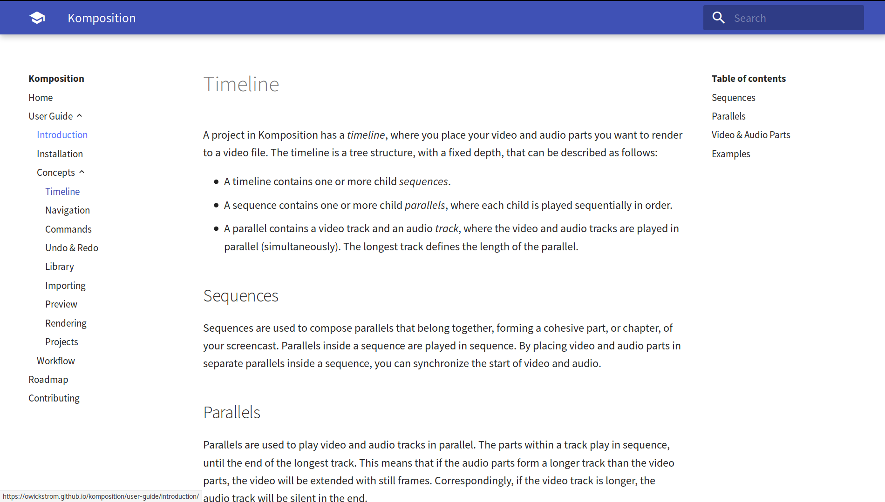

Writing a Screencast Video Editor in Haskell
Oskar Wickström
October 2018
About Me
- Live in Malmö, Sweden
- Work for Symbiont
- Blog at wickstrom.tech
- Maintain some open source projects
- Haskell at Work screencasts
- Spent the last six months writing a screencast video editor
Background
Haskell at Work
- “Haskell at Work” screencasts
- Centered around code editor
- Fast-paced
- No webcam overlay or effects
- My workflow
- Write a detailed script
- Record video separately
- Record audio separately
- Cut and join all “scenes”
Video Editors
- Free video editors (Kdenlive, OpenShot, …)
- No good normalization and audio gate effects
- Unstable (and I don’t want to hack C++)
- Unsuited for my workflow
- Commerical video editors (Premiere Pro, Final Cut Pro, …)
- Proprietary
- Expensive
- Unsuited for my workflow
The Great Yak Shave
Building a Video Editor
- I decided to build a screencast video editor
- Tailored to my workflow
- Minimal, do one thing well
- I decided write it in Haskell
- Didn’t want to write an Electron app
- Settled on GTK+
- Dog-fooding some of my own libraries
Komposition
Komposition Overview
|

|
Documentation
- owickstrom.github.io/komposition/
- User guide
- Tutorial screencast

Hiearchical Timeline
- Sequences contain parallels that are played in sequence
- Parallels contain video and audio tracks that are played in parallel
- Gaps are rendered with still frames or silence
- Same for shorter tracks within a parallel
- Sequences and parallels are used for
- Grouping/structure
- Synchronization
Keyboard-Driven Editing
- Vim-like bindings
- Corresponding menu items
- Some mouse support
- Help dialog showing current mode’s key bindings
Demo
Implementation
Implementation
| Language | Files | Comment | Code |
|---|---|---|---|
| Haskell | 61 | 172 | 5438 |
| CSS | 1 | 0 | 143 |
Striving for Purely Functional
- Pure functions and data structures in core domain
- Timeline
- Focus
- Commands
- Event handling
- Key bindings
- Parts of video classification
- Impure parts:
- Audio and video import
- Sentence classification
- Preview frame rendering
- Main application control flow
GTK+
- Haskell bindings from
gi-gtk - Regular GTK+ was too painful
- Imperative
- Callback-oriented
- Everything in IO, no explicit model
- Started
gi-gtk-declarative- Declarative using data structures
- VDOM-like diffing
- Event handling based on pure functions and values
- Custom widgets
- Imperative
gi-gtkwhere needed
Type-Indexed State Machines
Using
motorandrow-typesfor typed state machines:start :: Name n -> KeyMaps -> Actions m '[ n !+ State m WelcomeScreenMode] r ()returnToTimeline :: ReturnsToTimeline mode => Name n -> TimelineModel -> Actions m '[ n := State m mode !--> State m TimelineMode] r ()- Most complicated aspect of the codebase
Currently being rewritten
Singleton Pattern
data Mode
= WelcomeScreenMode
| TimelineMode
| LibraryMode
| ImportMode
data SMode m where
SWelcomeScreenMode :: SMode WelcomeScreenMode
STimelineMode :: SMode TimelineMode
SLibraryMode :: SMode LibraryMode
SImportMode :: SMode ImportModeUsing Singletons
data Command (mode :: Mode) where
Cancel :: Command mode
Help :: Command mode
FocusCommand :: FocusCommand -> Command TimelineMode
JumpFocus :: Focus SequenceFocusType -> Command TimelineMode
-- ...
keymaps :: SMode m -> KeyMap (Command m)
keymaps =
\case
SWelcomeScreenMode ->
[ ([KeyChar 'q'], Mapping Cancel)
, ([KeyEscape], Mapping Cancel)
, ([KeyChar '?'], Mapping Help)
]
-- ...Automatic Scene Classification
Creates a producer of frames
readVideoFile :: MonadIO m => FilePath -> Producer (Timed Frame) m ()Custom algorithm for classification
classifyMovement :: Monad m => Time -- ^ Minimum segment duration -> Producer (Timed RGB8Frame) m () -> Producer (Classified (Timed RGB8Frame)) m () classifyMovingScenes :: Monad m => Duration -- ^ Full length of video -> Producer (Classified (Timed RGB8Frame)) m () -> Producer ProgressUpdate m [TimeSpan]
Automatic Sentence Classification
- Automatic sentence classification of audio
- Currently using
sox- Normalization
- Noise gate
- Auto-splitting by silence
- Creates segment audio files on disk (can’t extract timespans)
- Hard to find good defaults (currently hard-coded)
Rendering
- Flattening timeline
- Conversion from hierarchical timeline to a flat representation
- Pads gaps and empty parts with still frames
- Flat representation is converted to a FFmpeg command
- Data types for FFmpeg CLI syntax
- Common flags
- Filter graph
Preview
- Proxy media for performance
- Same FFmpeg backend as when rendering
- Output is a streaming HTTP server
- Not ideal, would like to use a named pipe or domain socket
- GStreamer widget
- Consumes the HTTP stream
- Embedded in the GTK+ user interface
- Unreliable
- Currently doesn’t work on individual clips and gaps
Testing
Color-Tinting Video Classifier
- Tints the original video with red/green based on classification
- Easier to test classifier on real recordings
Property-Based Testing
- Timeline commands and movement
- Generates sequences of commands
- Applies all commands
- Resulting focus should always be valid
- Video scene classification
- Generates known test scenes
- Translates to real pixel buffers
- Runs classifier, compares to known test scenes
- Flattening of hierchical timeline
- Symmetry of FFmpeg format printers and parsers
Example-Based Testing
- Commands
- Navigation
- FFmpeg syntax printing
Used Packages
haskell-gi
- Bindings for GTK+, GStreamer, and more
- gi-gobject
- gi-glib
- gi-gst
- gi-gtk
- gi-gdk
- gi-gdkpixbuf
- gi-pango
- Extended with gi-gtk-declarative
massiv & massiv-io
- Used in video classifier
- Parallel comparison of pixel arrays
- Conversion from JuicyPixels frames to massiv arrays
- Lower-resolution proxy media helps with performance
Pipes
- Streaming frame reader and writer around
ffmpeg-light IO operations with streaming progress notifications
importVideoFileAutoSplit :: (MonadIO m, MonadSafe m) => VideoSettings -> FilePath -> FilePath -> Producer ProgressUpdate m [VideoAsset]pipes-safefor handling resourcespipes-parseforStateT-based transformations
Others
- protolude
- lens
- typed-process
Summary
Retrospective
- The best parts
- Building a useful tool
- Haskell and GHC
- Keeping core domain pure
- Testing with Hedgehog
- The problematic parts
- Video and audio codecs, containers, streaming
- Executing external programs
- GTK+ in Haskell
- Dependency managment (non-Haskell dependencies)
Next Steps
- Features
- More commands (yank, paste, join, …)
- Preview any timeline part
- Adjust clips
- Better OS integration and GUI
- Improvements
- Technical debt, refactoring
- Content-addressed project files (reuse, avoiding collision)
- Optimized FFmpeg rendering
- Optimized diffing (gi-gtk-declarative)
- Packaging (Debian, macOS, Windows, nixpkgs)
Thank You!
- Komposition: owickstrom.github.io/komposition/
- Slides: owickstrom.github.io/writing-a-screencast-video-editor-in-haskell/
- Image credits:
.jpg){kind=link}